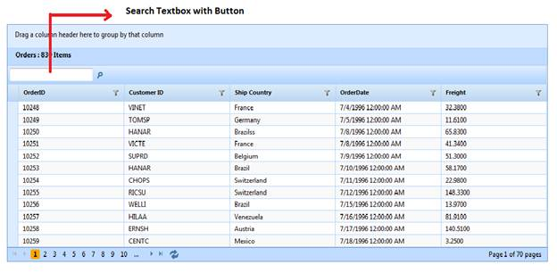

To add the Search text box to the grid through GridBuilder:
1. Create a model in the application (Refer to GettingStarted > Adding a Model to the Application).
2. Create a strongly typed view (Refer to How to > Strongly Typed View).
3. In the view, you can use its Model property in Datasource() to bind the data source.
|
View [ASPX] <%=Html.Syncfusion().Grid<Order>("SearchingGrid") .Datasource(Model) .Caption("Orders") .EnablePaging() .AutoFormat(Skins.Sandune) .Column( columns => { columns.Add(p => p.OrderID).HeaderText("Order ID"); columns.Add(p => p.CustomerID).HeaderText("Customer ID"); columns.Add(p => p.EmployeeID).HeaderText("Employee ID"); columns.Add(P => P.ShipCountry).HeaderText("Ship Country"); columns.Add(p => p.ShipCity).HeaderText("Ship City"); })%> |
|
View [cshtml] @{ Html.Syncfusion().Grid<Order>("SearchingGrid") .Datasource(Model) .Caption("Orders") .EnablePaging() .AutoFormat(Skins.Sandune) .Column( columns => { columns.Add(p => p.OrderID).HeaderText("Order ID"); columns.Add(p => p.CustomerID).HeaderText("Customer ID"); columns.Add(p => p.EmployeeID).HeaderText("Employee ID"); columns.Add(P => P.ShipCountry).HeaderText("Ship Country"); columns.Add(p => p.ShipCity).HeaderText("Ship City"); }).Render(); } |
4. To activate the search feature in the view, set the AllowSearching property to True.
|
View [ASPX] <%=Html.Syncfusion().Grid<Order>("SearchingGrid") .Datasource(Model) .Caption("Orders") .AllowSearching(true) .EnablePaging() .AutoFormat(Skins.Sandune) .Column( columns => { columns.Add(p => p.OrderID).HeaderText("Order ID"); columns.Add(p => p.CustomerID).HeaderText("Customer ID"); columns.Add(p => p.EmployeeID).HeaderText("Employee ID"); columns.Add(P => P.ShipCountry).HeaderText("Ship Country"); columns.Add(p => p.ShipCity).HeaderText("Ship City"); })%> |
|
View [cshtml]
@( Html.Syncfusion().Grid<Order>("SearchingGrid") .Datasource(Model) .Caption("Orders") .AllowSearching(true) .EnablePaging() .AutoFormat(Skins.Sandune) .Column( columns => { columns.Add(p => p.OrderID).HeaderText("Order ID"); columns.Add(p => p.CustomerID).HeaderText("Customer ID"); columns.Add(p => p.EmployeeID).HeaderText("Employee ID"); columns.Add(P => P.ShipCountry).HeaderText("Ship Country"); columns.Add(p => p.ShipCity).HeaderText("Ship City"); }) ) |
5. If you want to enable or disable the search options for individual columns, use the AllowSearching(bool) method in column mapping.
|
View [ASPX] <%=Html.Syncfusion().Grid<Order>("SearchingGrid")
|
|
View [cshtml] @{
Html.Syncfusion().Grid<Order>("SearchingGrid")
|
6. Set its data source and render the view.
|
Controller
/// <summary> /// Used to bind the grid. /// </summary> /// <returns>View page; it displays the grid.</returns> public ActionResult Index() { var data = new NorthwindDataContext().Orders; return View(data); } |
7. In order to work with searching actions, create a Post method for Index actions and bind the data source to the grid as shown in the following code.
|
Controller
/// <summary> /// Paging/sorting requests are mapped to this method. This method invokes the HtmlActionResult /// from the grid. Required response is generated. /// </summary> /// <param name="args">Contains paging properties.</param> /// <returns> /// HtmlActionResult returns the data displayed on the grid. /// </returns> [AcceptVerbs(HttpVerbs.Post)] public ActionResult Index(PagingParams args) { IEnumerable data = new NorthwindDataContext().Orders; return data.GridActions<Order>(); } |
8. Run the application. The grid will appear as shown below.

Figure 129: Grid with Search Text Box